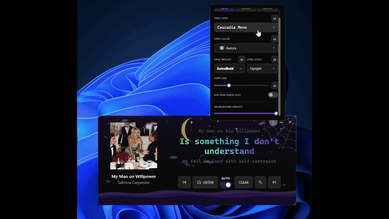
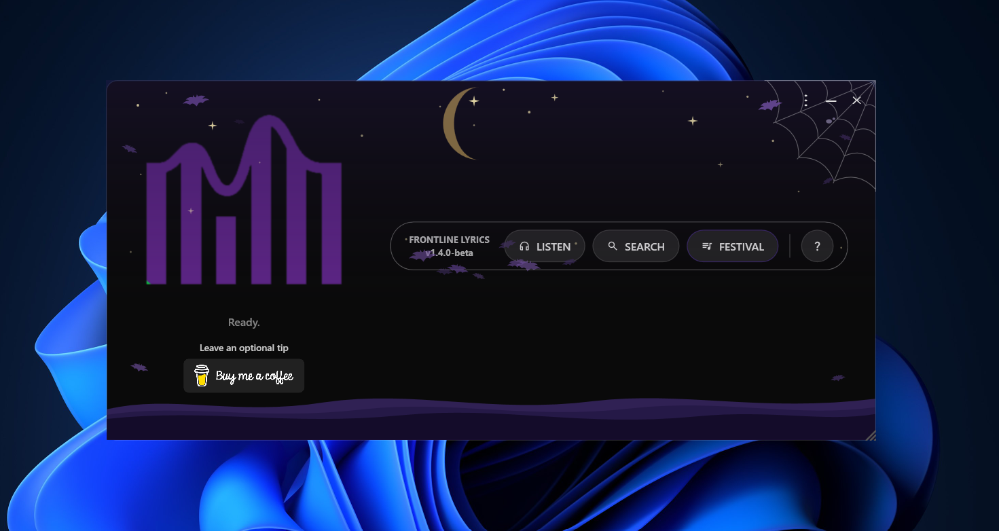

Early Access Program
Try upcoming updates before they're released to everyone through the Microsoft Store.
Hey everyone! I'm excited to announce something new for FrontLine Lyrics! Starting with version 1.4.0-Beta, I'm introducing an early access program for everyone who supports the project through Buy Me a Coffee.
What's new in 1.4.0-Beta?
Choose your lyrics font
You can now change the font used to display your lyrics!

🎃🎄🎆 Seasonal themes
To celebrate the end of the year, FrontLine Lyrics is getting three seasonal themes. These themes appear automatically during their respective dates in supported countries and regions (availability varies by region).
- 🎃 Halloween: October 15 – November 1
- 🎄 Christmas: December 1 – 26
- 🎆 New Year: December 30 – January 3

What's coming next?
Version 1.5.0-Beta (planned)
- Choose from a collection of application themes.
- Import your own custom fonts.
- ✨ And more!
Version 1.6.0 and beyond
Future development will focus on performance, stability, reliability, and expanding font support to display lyrics from an even wider variety of songs and languages.
* These are development plans and may change based on testing and feedback.
How do I get early access?
If you've supported FrontLine Lyrics through Buy Me a Coffee, you can request access to the beta program! Here's what you need to do:
- Open the Microsoft Store on the Windows PC where you use FrontLine Lyrics.
- Click your profile icon and check which Microsoft account is signed in.
- Send me the email address associated with that Microsoft Store account through a private message on Buy Me a Coffee.
- Once your contribution is verified, I'll add your Microsoft account to the beta access list.
Please make sure you provide the correct Microsoft Store account email. Using a different account may prevent the beta update from appearing. You don't need to share your password, verification codes, or any other login information.
Access is not immediate. It may take some time after your contribution and access request for your account to be added and for the beta to become available. Once your account is eligible and the beta has been published, you can receive the beta through the Microsoft Store using the registered account.
A few things to know
Beta versions are still being tested. You may encounter bugs, unexpected behavior, or features that change before the public release. There is no fixed duration for a beta. Some updates may require more testing than others, and public releases will happen when they're ready.
Your ideas matter!
Whether you're a supporter or a regular user, your voice matters. Have an idea for a new feature? Found a bug? Think something could work better? I'd love to hear from you! Your suggestions and feedback can help shape future updates.
Every contribution helps me dedicate more time to making the app better.
☕ Support on Buy Me a Coffee